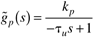
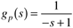
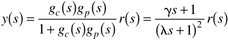
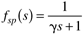
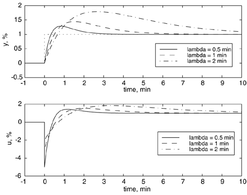
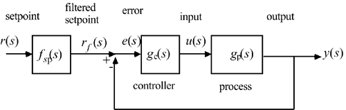
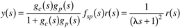

| [ Team LiB ] |
|
9.6 IMC-Based PID Controller Design for Unstable ProcessesThe IMC procedure must be modified for unstable processes. Rotstein and Lewin (1991) have used the procedure developed by Morari and Zafiriou (1989) to find IMC-based PID controllers for unstable processes. The modification to the procedure shown in Sections 9.2 and 9.3 is to use a slightly more complicated filter transfer function.
Example 9.4 illustrates this procedure for a first-order unstable process. Example 9.4: IMC-Based PID Design for a First-Order Unstable ProcessFind the IMC-based PID controller for a first-order unstable process  where tu is given a positive value. The pole, pu, is 1/tu, which is positive, indicating instability.
As a numerical example, consider . The closed loop output responses for various values of l are shown in Figure 9-7a, while the manipulated variable responses are shown in Figure 9-7b. Notice that we do not achieve the nice overdamped-type of closed-loop output responses that we were able to obtain with open-loop stable processes. The reader should show that the closed-loop relationship for this system is  which has overshoot if g > l [this is always the case for this system; see Equation 9.27)]. In Figure 9-7 we notice that the closed-loop response had overshoot. A response to a setpoint change, without overshoot, can be obtained by including a setpoint filter, as shown in Figure 9-8. The setpoint filter is  Figure 9-7. Responses for a step setpoint change, for various values of l. (a) Output; (b) manipulated input. Figure 9-8. FBC with a setpoint filter. which yields the following closed-loop response for a setpoint change.  The results for several unstable process transfer functions are shown in Table 9-3. See Rotstein and Lewin (1991) for a discussion of the effect of dead time and model uncertainty on the control of unstable processes. Summary of IMC-Based PID Controller Design for Unstable ProcessesA major tuning consideration by the student is that there are both upper and lower bounds on l to assure stability of an unstable process. This is in contrast to stable processes, where the closed loop is guaranteed to be stable under model uncertainty, simply by increasing l to a large value (detuning the controller). |
| [ Team LiB ] |
|